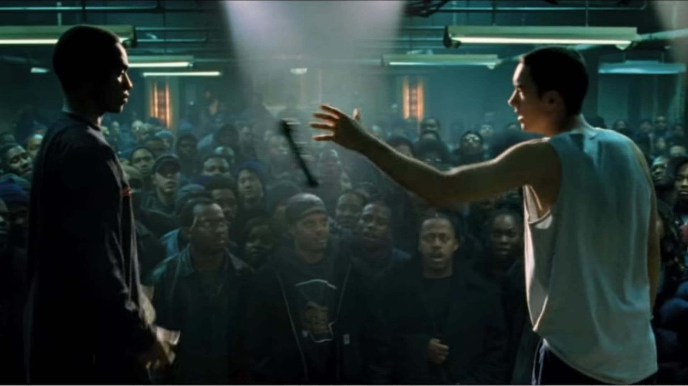
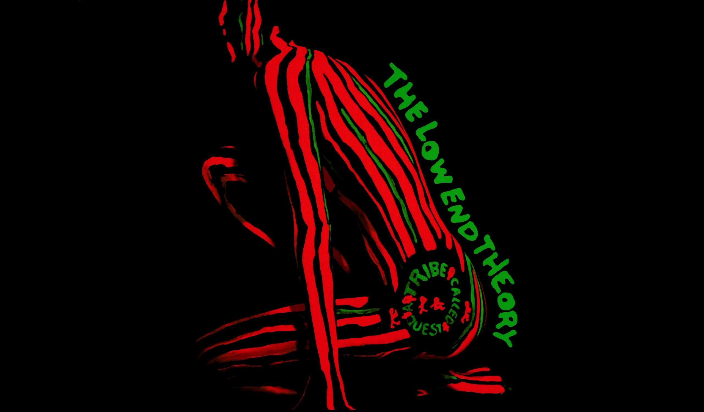
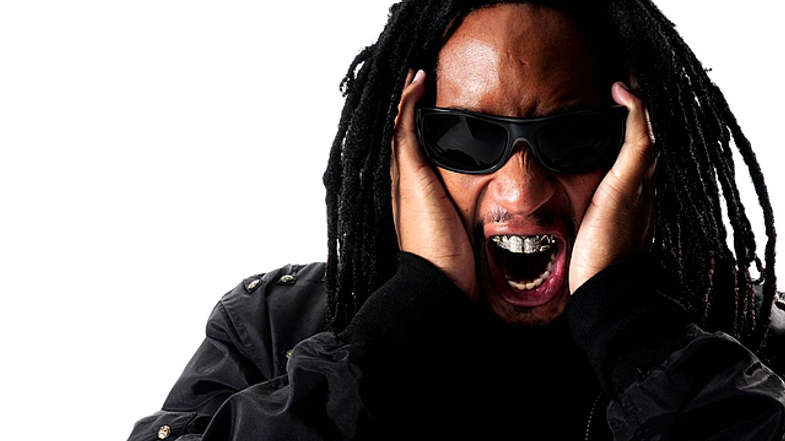
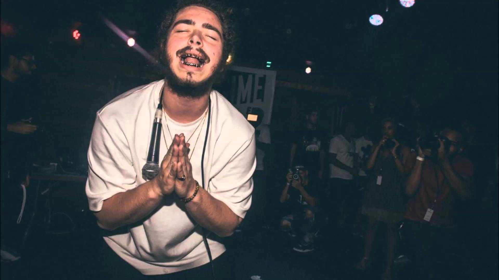

Styles
In this section we've compiled a list of 5 prominent genres and styles in the hip hop scene. So without any further ado, let's get right into them!
1. Battle Rap
 source: 8 MileBattle rap is a style of hip hop/rap that is all about trying to be the best of everyone. The contents of this genre mostly includes bragging, insulting others and boasting about themselves. Rap battles often occur in a freestyle rap form where two rappers or MC's will battle to see who has the better verses. These battles can even appear on albums where they are recorded by the rappers in the studio itself. Some key artists in this genre are Jay-z, LL Cool J, Eminem and many more.
2. Concious Hip Hop
 source: A Tribe Called Quest - The Low End TheoryConscious hip hop is a genre for rappers who have ideas to share to the world. The lyrics in this genre usually tell a story and also the personal views that these rappers have about the society and certain politics. These rappers want change in the world and aren't afraid to let us know. The meaning in these types of songs are often rather deep and can make people think or even motivate them to start changing certain aspects of their lives. A few popular artists in this genre are Talib Kweli, Common, Mos Def and many more.
3. Crunk
 source: Lil JonAs opposed to the more emotional conscious rap, crunk offers more of a hard beat with repeated catchphrases. Crunk borrows heavily from more modern electronic music using heavy synths and 808 drum samples. This genre is usually made for a more mainstream audience and is played a lot at parties and clubs. The most popular crunk artist in recent times is most likely Lil Jon with his biggest hits being Get Low and Shots.
4. Gansta Rap
 source: Snoop Dogg
source: Snoop Dogg
Gansta rap is characterized by themes that revolve around the gangster lifestyle that a lot of these artists live. Similar to the previous genre mentioned, gansta rap uses a lot more heavy beats than other subgenres. The musicians involved with this genre aren't afraid of openly boasting about their association with street gangs and criminal activity. Gansta rap has also caused a great deal of controversy because of the risque topics that these songs are based on. Some of the key musicians here are Snoop Dogg, Dr. Dre, N.W.A. and more.
5. Mumble Rap
 source: Post MaloneMumble rap is a very new genre to the hip hop scene. This genre is also known as Soundcloud Rap because of the great deal of artists who've originated their success from the online music streaming platform Soundcloud. The topics covered in these songs are a little like the topics of gansta rap, usually being drugs, sex and violence. The way the vocals are performed are usually either very loud and shouted or very quite and mumbled, hence the name mumble rap. This type of rap has become sort of the mainstream with it being played on the radio a lot and more hit artists keep coming up. Some big artists in the scene are XXXTentacion, Post Malone, Lil Pump etc.